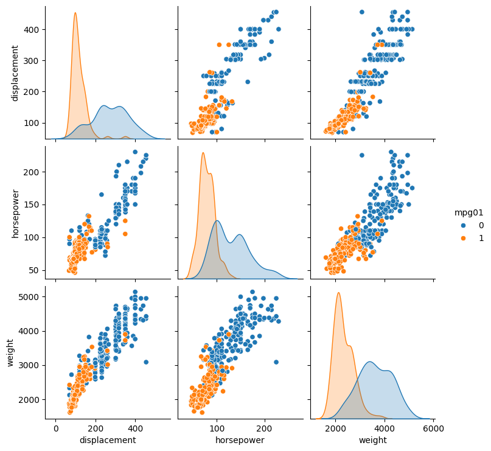

Auto MPG Classification Assignment

In this blog post, I explored the Auto dataset and created a binary variable mpg01 to classify cars into high and low gas mileage. Visualizations are used to inspect which features are most predictive.
Part (a) - Creating mpg01
We calculate the median MPG and assign 1 to cars with MPG above the median, 0 otherwise.
import pandas as pd
import numpy as np
# Load dataset
url = "https://raw.githubusercontent.com/selva86/datasets/master/Auto.csv"
Auto = pd.read_csv(url)
# Create binary variable
median_mpg = Auto['mpg'].median()
Auto['mpg01'] = (Auto['mpg'] > median_mpg).astype(int)
Auto.head()Part (b) - Data Exploration
We use boxplots and scatterplots to investigate the association between mpg01 and other features. Features most associated with mpg01 are cylinders, displacement, horsepower, and weight.
import matplotlib.pyplot as plt
import seaborn as sns
features = ['cylinders','displacement','horsepower','weight','acceleration','year','origin']
# Boxplots
for f in features:
plt.figure(figsize=(6,4))
sns.boxplot(x='mpg01', y=f, data=Auto)
plt.title(f'{f} vs mpg01')
plt.savefig(f'plot_{f}.png', bbox_inches='tight')
plt.close()
# Pairplot for strongest predictors
sns.pairplot(Auto, vars=['displacement','horsepower','weight'], hue='mpg01')
plt.savefig('pairplot.png', bbox_inches='tight')
plt.close()Boxplots
Distribution of each feature for low vs high MPG cars:


Scatterplot Matrix
Scatterplot matrix of displacement, horsepower, and weight grouped by mpg01:

Next Steps
These exploratory analyses help determine which variables will be useful for predictive models such as logistic regression, LDA, and QDA. In the next part, I will split the data into training and test sets and perform the classification models.
View the Full Notebook
You can check out the full Python notebook here: Auto MPG Classification Notebook on GitHub